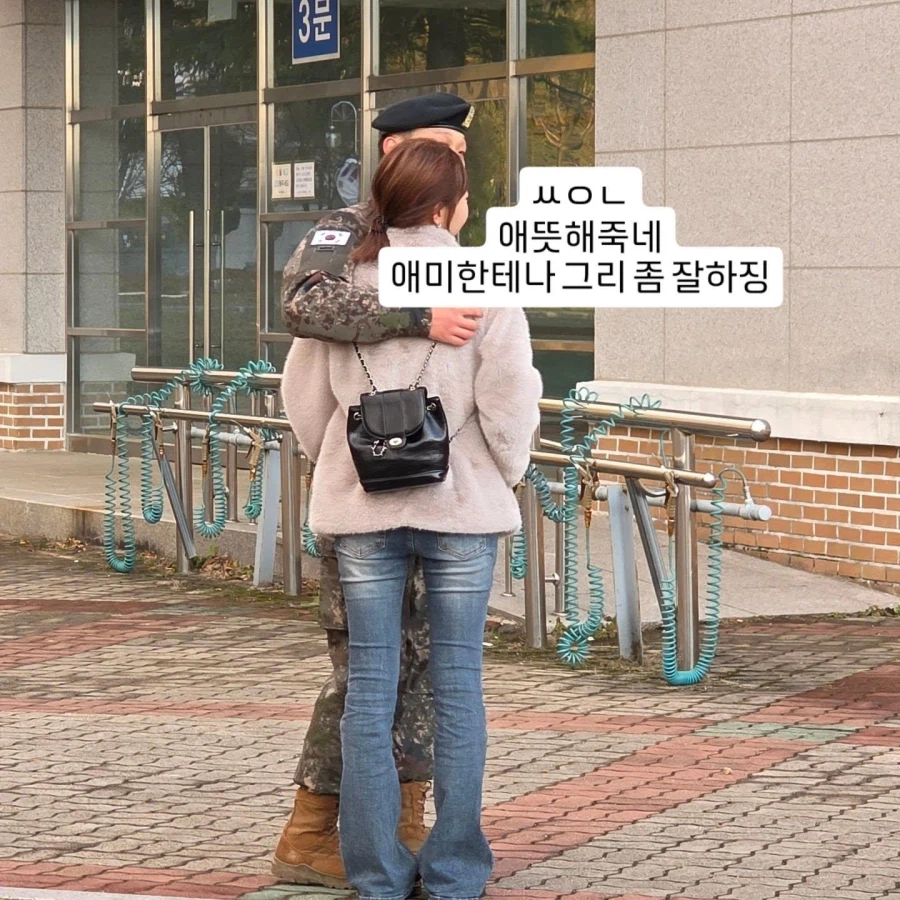

???: 누구랑 더 오래 생활할거 같냐?

???: 누구랑 더 오래 생활할거 같냐?
저거 얼마 전부터 거의 폐지수순이긴해
요새는 폰 있어서 잘 안헤어지나? 별로 안바꼈을거같긴한데
어쩌피 나이가 어려서 저대로 결혼하는애들 거의 없긴해 ㅋㅋ
어차피 전역때쯤이면 이상형이바껴서 헤어질텐데
아들이 진짜로 여친 보는 앞에서 엄마한테 먼저 포옹하면 이제 한심한놈 취급할듯ㅋㅋㅋㅋ
나만 그런진 모르겠지만
저런생각을 할순있는데 굳이 사진까지 찍어서 인터넷에 올려서 지아들 생판 모르는사람 입에 오르내리락 하는걸 왜하는지모르겠네.
같이 아들 욕해주길 원하는것도아니고
자랑하는거야
육군 아직도 저 병신모 쓰냐
부럽네
아 훈련소 수료식에 가족들이 감?
저 병신같은 빵모자는 15년이 지나도 병신 같냐
전투모로 다시 바꾸지는